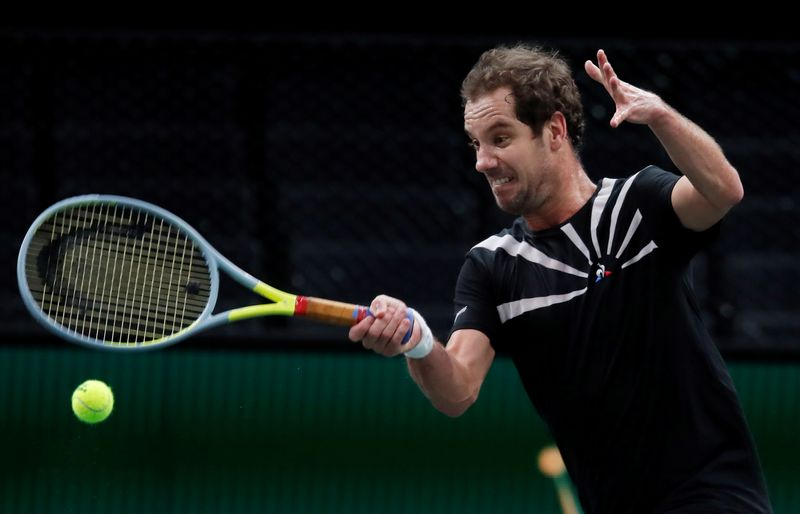

Gasquet pulls out of Monte Carlo following COVID-19 related complications
(Reuters) – Frenchman Richard Gasquet said on Friday that he was pulling out of next week’s Monte Carlo Masters because of 'complications related to COVID-19'.
The world number 49, who reached the semi-finals of the claycourt Masters in 2005, has had a tough start to the season, notably not being able to take part in the Australian Open because of a foot injury.
Gasquet, who made the announcement on Instagram, has only won two matches this year on the main tour.
(Reporting by Julien Pretot; Editing by Christian Radnedge)
Posted On: 2021-04-09T00:00:00

Content Date: 2021-04-09
Download Date: 2021-04-17
Document ID: L0C04A6PZ